Nom de l'application : OffLink
Public cible : Toute personne souhaitant effectuer des appels vocaux de groupe au sein d'un même réseau WiFi
Date de création : 9 mars 2026
Dernière mise à jour : 11 avril 2026
OffLink est une application qui permet de passer des appels vocaux de groupe sans connexion Internet, au sein d'un même réseau WiFi ou partage de connexion. Grâce à la communication P2P via WebRTC, elle offre des appels vocaux à très faible latence.
Exemples d'utilisation :
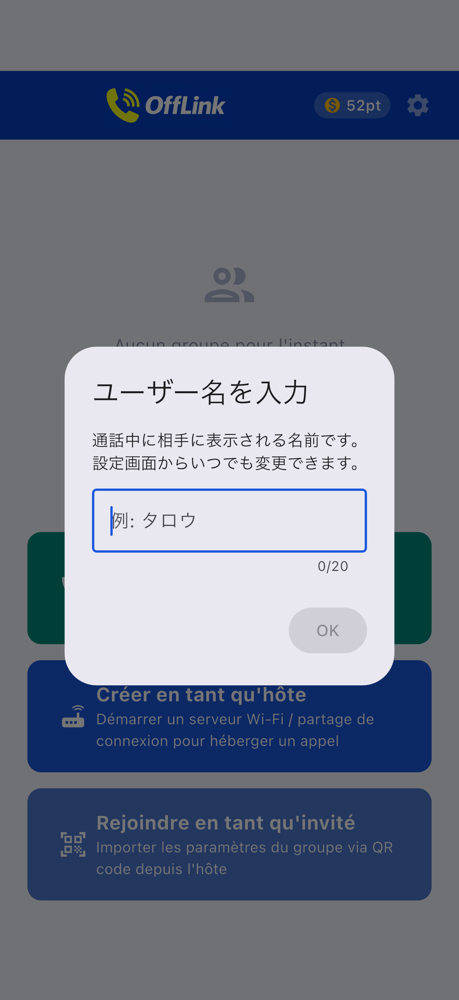
Écran d'accueil après le lancement de l'application. Commencez en utilisant les trois boutons en bas de l'écran.
OffLink fonctionne en mode WiFi LAN. Tous les participants doivent être connectés au même réseau WiFi. L'appareil hôte démarre un serveur de signalisation et les appels vocaux s'effectuent entre les appareils du même réseau.
Point clé : Aucune connexion Internet n'est nécessaire.
| Rôle | Appareils compatibles | Description |
|---|---|---|
| Hôte | Android / iPhone | Appareil qui démarre le serveur de signalisation et gère l'appel |
| Invité | Android / iPhone | Appareil qui rejoint l'appel créé par l'hôte |
Remarque : Tous les participants doivent être connectés au même réseau WiFi.
| Autorisation | Utilisation | Impact en cas de refus |
|---|---|---|
| Microphone | Appels vocaux | Impossible de passer des appels |
| Caméra | Scan de QR code | Impossible d'enregistrer un groupe par QR code |
| Appareils à proximité (WiFi) ※Android | Détection du réseau WiFi | Impossible de détecter l'hôte |
| Localisation ※Android | Scan WiFi (exigence du système) | Impossible d'obtenir le SSID WiFi |
| Bluetooth ※Android | Connexion casque | Impossible d'utiliser un casque |
| Notifications ※Android | Notifications d'invitation d'appel | Pas de notification en arrière-plan |
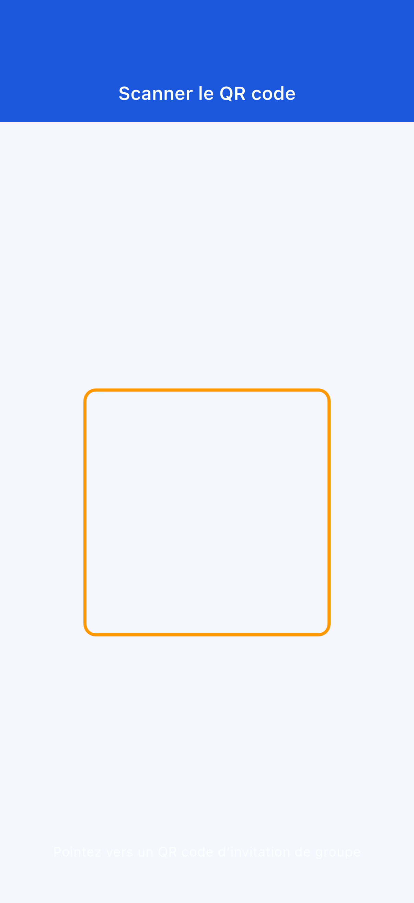
Si vous avez refusé une autorisation par erreur : allez dans « Paramètres » → « Applications » → « OffLink » pour modifier les autorisations.
Commencez un appel instantanément sans créer de groupe au préalable.
Étape 1 : Tous les participants se connectent au même WiFi
Étape 2 : Appuyez sur « Appel immédiat » (bouton vert)
Étape 3 : Saisissez votre nom d'utilisateur
Étape 4 : Sélectionnez un niveau et lancez l'appel (→ 3-5. Système de points)
Étape 5 : Une invitation d'appel est automatiquement envoyée aux membres du même réseau WiFi
Si un hôte existe déjà, vous pouvez choisir de le rejoindre ou de démarrer un nouvel appel.
Étape 1 : Appuyez sur « Créer en tant qu'hôte » (bouton bleu)
Étape 2 : Saisissez le nom du groupe et un mot de passe (facultatif), puis appuyez sur « Créer »

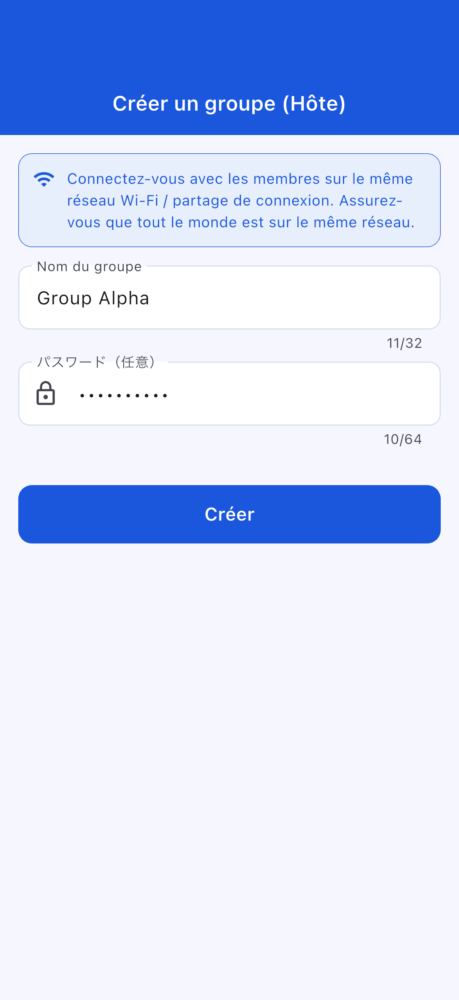
Astuce : Choisissez un nom de groupe facile à identifier. Il est recommandé de définir un mot de passe.
Étape 3 : Sélectionnez l'action de création
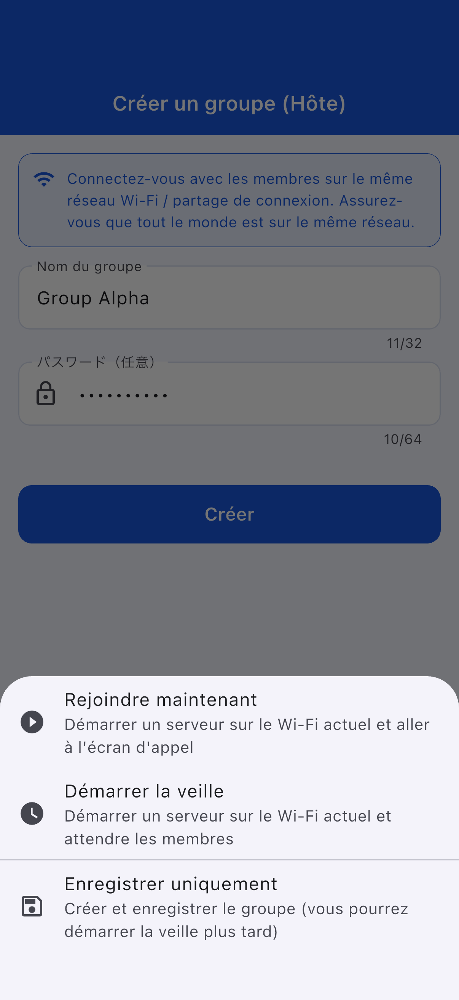
| Action | Description |
|---|---|
| Rejoindre maintenant | Démarre le serveur et accède à l'écran d'appel |
| Démarrer en veille | Démarre le serveur et reste en attente |
| Enregistrer uniquement | Peut être démarré ultérieurement |
Étape 1 : Appuyez sur « Rejoindre en tant qu'invité » (bouton bleu clair)
Étape 2 : Choisissez la méthode pour rejoindre
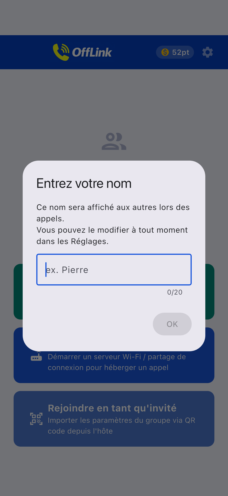
| Méthode | Action |
|---|---|
| 📱 Scanner le QR code | Scannez le QR code de l'hôte |
| 📋 Coller le code | Collez le code partagé |
| ✏️ Saisie manuelle | Saisissez directement les informations |
Partage du QR code (côté hôte) :
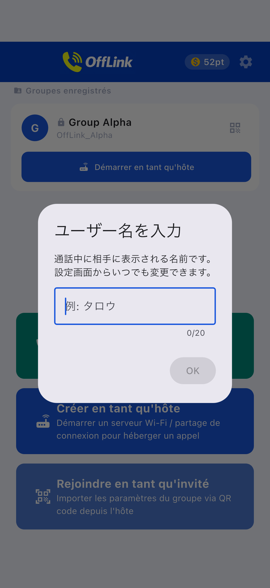
Collage du code (côté invité) :
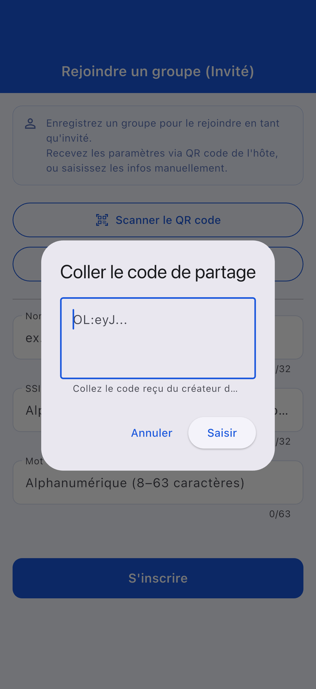
Étape 3 : Une fois les informations saisies, appuyez sur « Enregistrer »
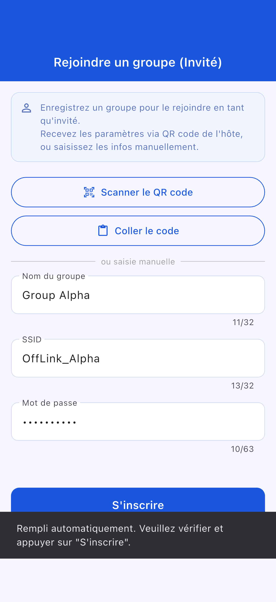
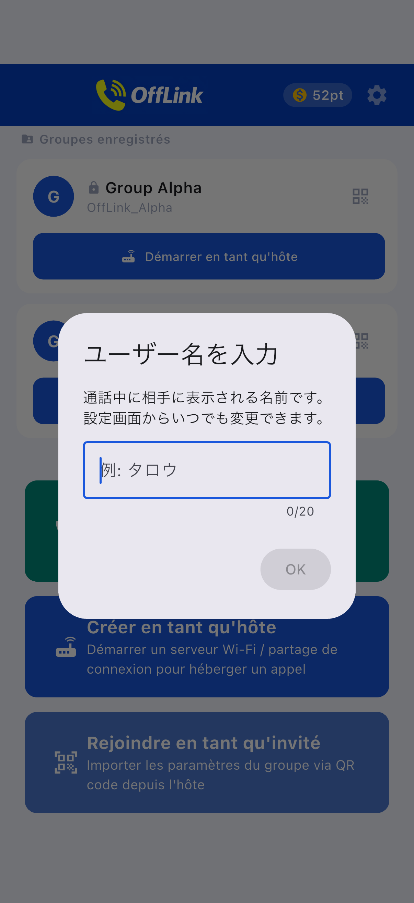
Écran de participation invité :
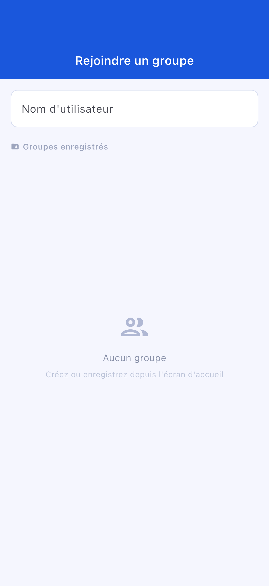
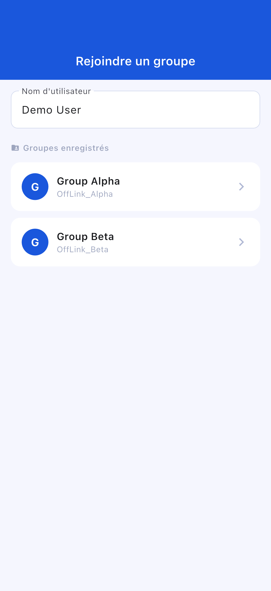
Écran de veille :
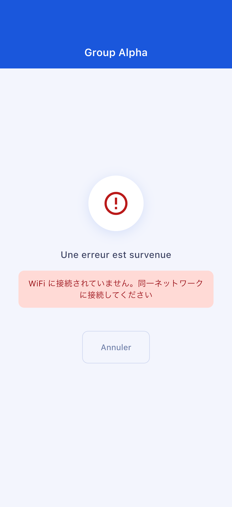
Écran d'appel :
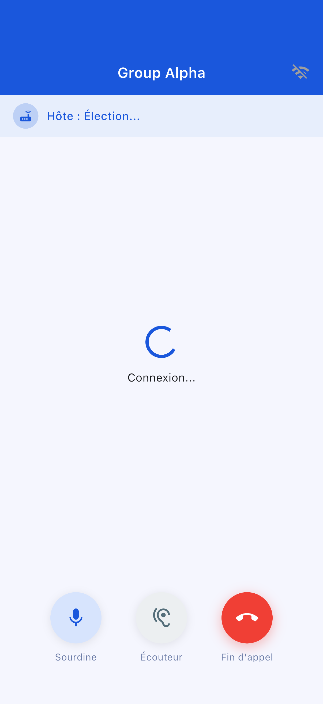
| Bouton | Fonction |
|---|---|
| 🎤 Muet | Activer/désactiver le micro |
| 🔊 Changer la sortie audio | Haut-parleur / Bluetooth / Écouteur |
| 🔴 Fin d'appel | Quitter l'appel |
| Niveau | Points consommés | Participants maximum |
|---|---|---|
| Standard | 10 pt | 4 personnes |
| Large | 20 pt | 10 personnes |
OffLink ne dispose pas de fonction de démarrage automatique du point d'accès. Veuillez activer manuellement le partage de connexion.
Allez dans « Paramètres » → « Applications » → « OffLink » → « Autorisations » pour les modifier
| Élément | Limitation |
|---|---|
| Nombre maximum de participants | Standard : 4 / Large : 10 |
| Mode de communication | WiFi LAN uniquement |
| Arrière-plan | Limité selon le modèle d'appareil |
| Limite de groupes enregistrés | Free : 5 / Premium : illimité |
| Élément | Recommandation |
|---|---|
| Android | 5.0+ (API 21+) |
| iOS | 13.0+ |
| Batterie | 80 % ou plus recommandé |
| Stockage | 100 Mo ou plus |
| WiFi | Routeur / Partage de connexion / WiFi de poche, etc. |